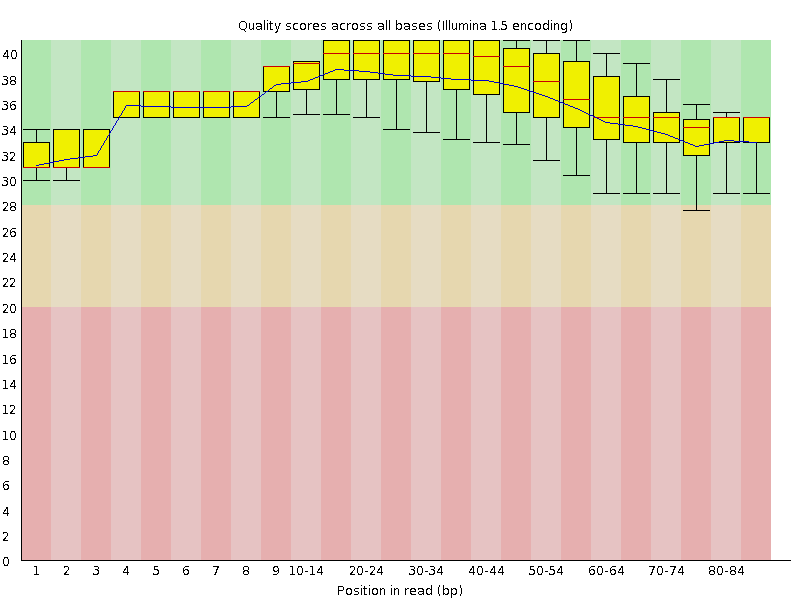
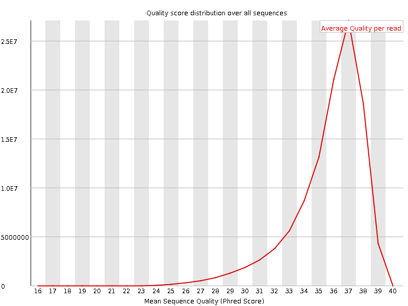
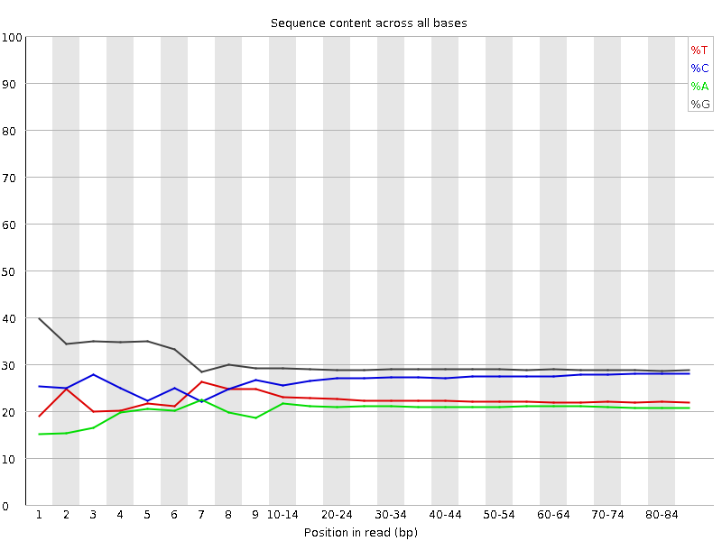
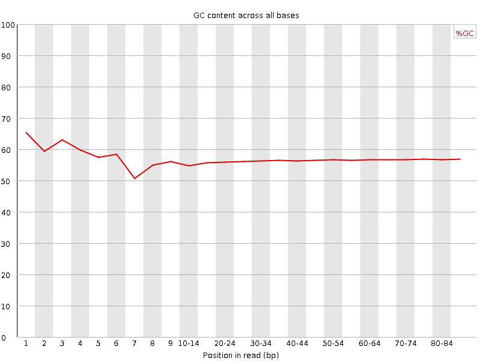
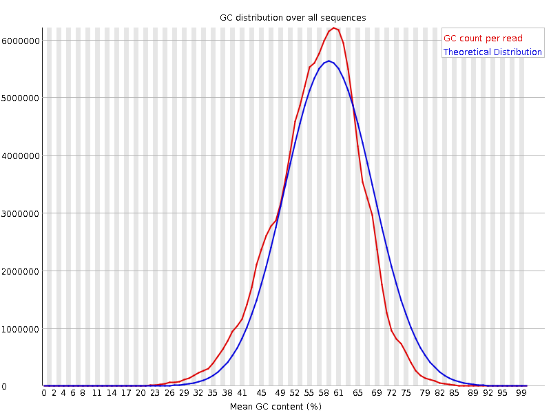
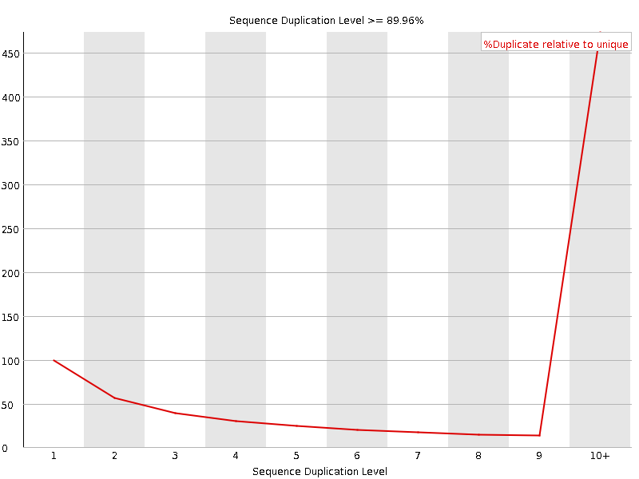

![[OK]](Icons/tick.png) Basic Statistics
Basic Statistics
| Measure | Value |
|---|---|
| Filename | SRR534292_pe_1.f.fastq |
| File type | Conventional base calls |
| Encoding | Illumina 1.5 |
| Total Sequences | 110484498 |
| Filtered Sequences | 0 |
| Sequence length | 85 |
| %GC | 56 |
Per base sequence quality

Per sequence quality scores

![[FAIL]](Icons/error.png) Per base sequence content
Per base sequence content

![[WARN]](Icons/warning.png) Per base GC content
Per base GC content

Per sequence GC content

Per base N content

Sequence Length Distribution

Sequence Duplication Levels

Overrepresented sequences
| Sequence | Count | Percentage | Possible Source |
|---|---|---|---|
| GGGAACTTGAATTCGTATCCATCTGGCAGCTTGACGGTCAGGTTGGCCTG | 162647 | 0.1472125075863584 | No Hit |
Kmer Content

| Sequence | Count | Obs/Exp Overall | Obs/Exp Max | Max Obs/Exp Position |
|---|---|---|---|---|
| CAGCA | 32828925 | 3.8459356 | 4.8497486 | 9 |
| CCAGG | 42005660 | 3.485674 | 4.0083795 | 2 |
| CACCA | 25177185 | 3.1984615 | 3.7100387 | 70-74 |
| TCCAG | 28865235 | 3.1561766 | 4.1274366 | 80-81 |
| GGCAG | 29786825 | 2.2793686 | 5.807441 | 1 |
| TTTTT | 8924480 | 1.7719631 | 6.463122 | 1 |
| TTGAA | 8491045 | 1.4687362 | 5.5458155 | 7 |